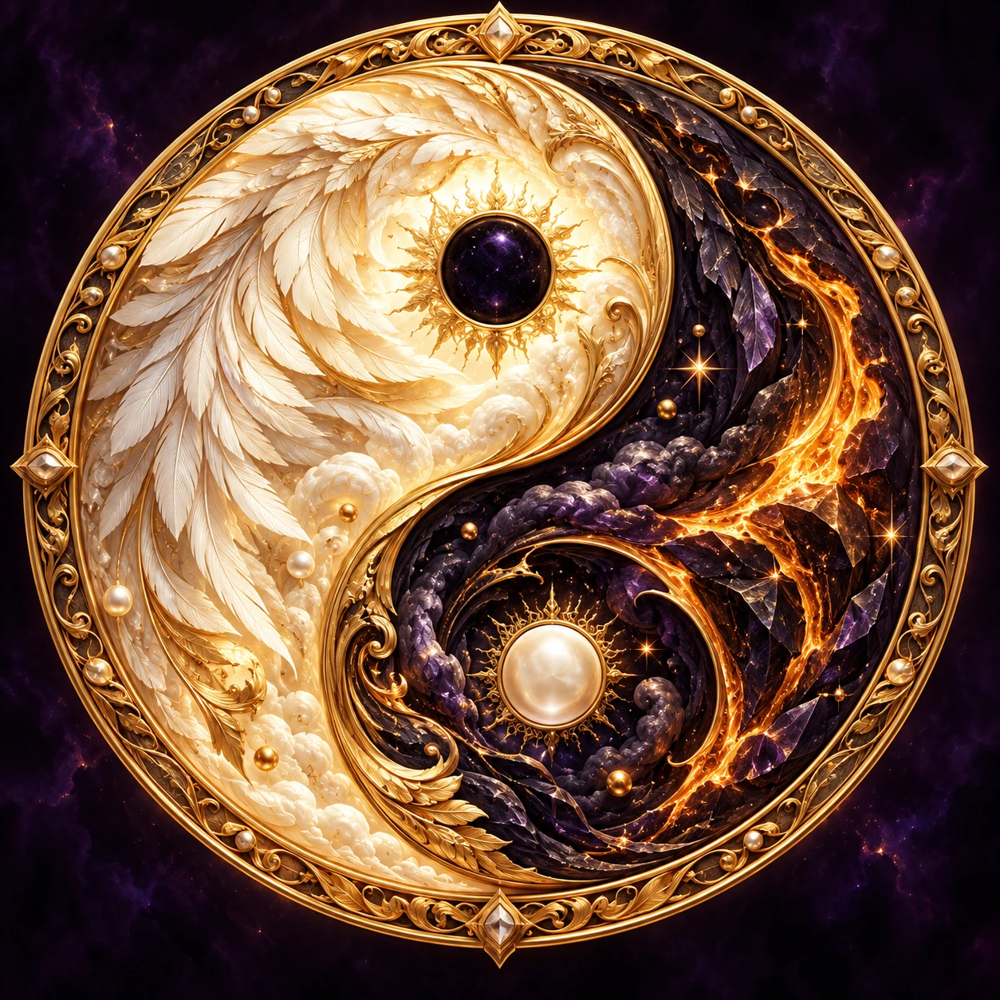
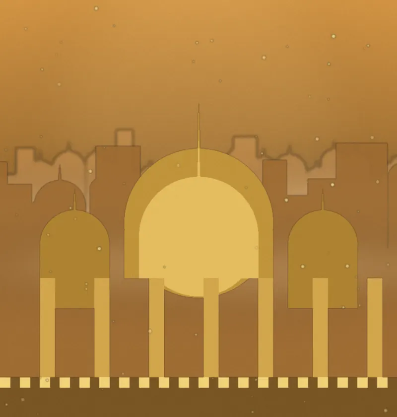

पाँच प्रण द्वार · 01 / 05
चक्रव्यूह का प्रवेश
दोनों रास्ते खुले हैं। पहला द्वार छूकर अपनी यात्रा शुरू करो।
स्वयं · पहला आईनाद्वार छुओ ↗

पाँच प्रण द्वार · 01 / 05
दोनों रास्ते खुले हैं। पहला द्वार छूकर अपनी यात्रा शुरू करो।

